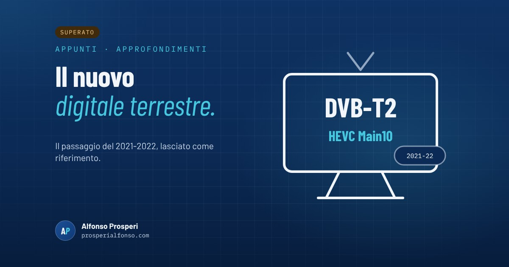

Questo articolo, del febbraio 2021, spiegava il passaggio al nuovo digitale terrestre, che nel frattempo si è concluso. Lo lasciamo come riferimento.
Dal settembre 2021 era iniziato il cambio dello standard delle trasmissioni televisive: solo i televisori e i decoder compatibili avrebbero continuato a ricevere tutti i canali.
Come si verificava se la TV era compatibile
- I televisori acquistati dopo il 1° gennaio 2017 dovevano già essere compatibili, perché da allora i negozi erano obbligati a vendere apparecchi con lo standard DVB-T2.
- In alternativa si poteva cercare l'indicazione DVB-T2 nel manuale o nella scheda tecnica.
- Per il primo passaggio (settembre 2021) bastava vedere almeno un canale HD, per esempio il 501 (Rai 1 HD) o il 505 (Canale 5 HD).
- Il secondo passaggio, allo standard HEVC Main10, si verificava con i canali di prova 100 e 200: se compariva la scritta "Test HEVC Main10", la TV era compatibile.
Decoder o nuova TV
Chi aveva un televisore non compatibile poteva comprare un decoder, che allora costava da circa 30 a 250 euro, oppure cambiare TV.
Il bonus TV di allora
Era previsto un bonus fino a 50 euro per l'acquisto di una TV o di un decoder compatibile, riservato alle famiglie con ISEE fino a 20.000 euro e applicato come sconto dal venditore. Era legato a quel periodo e i moduli e la pagina del ministero indicati all'epoca non sono più attivi.